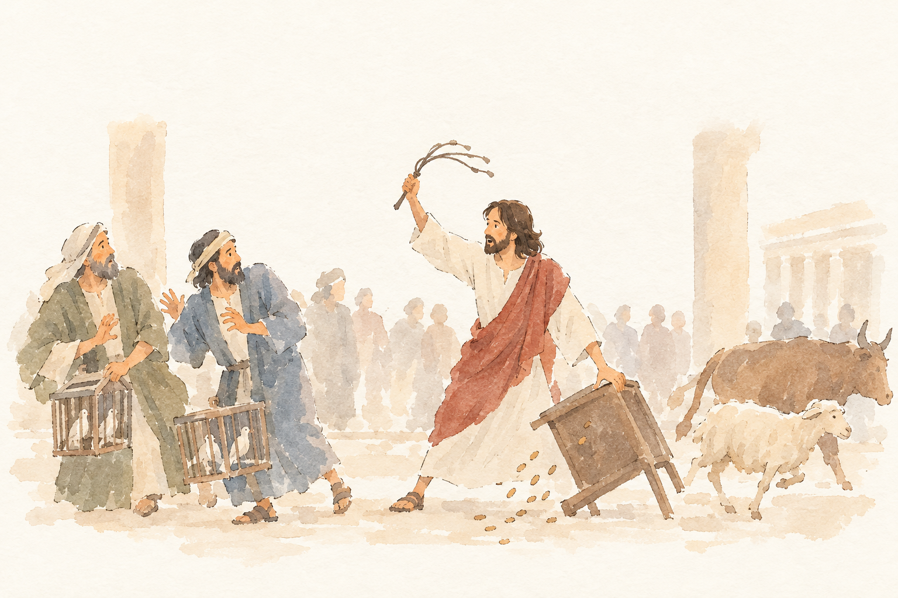
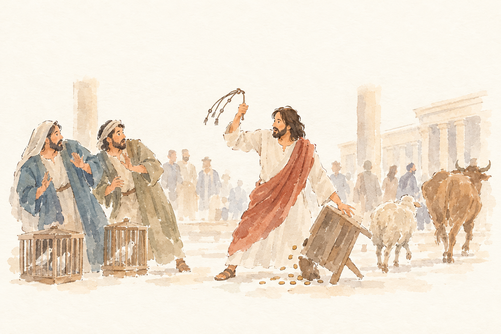
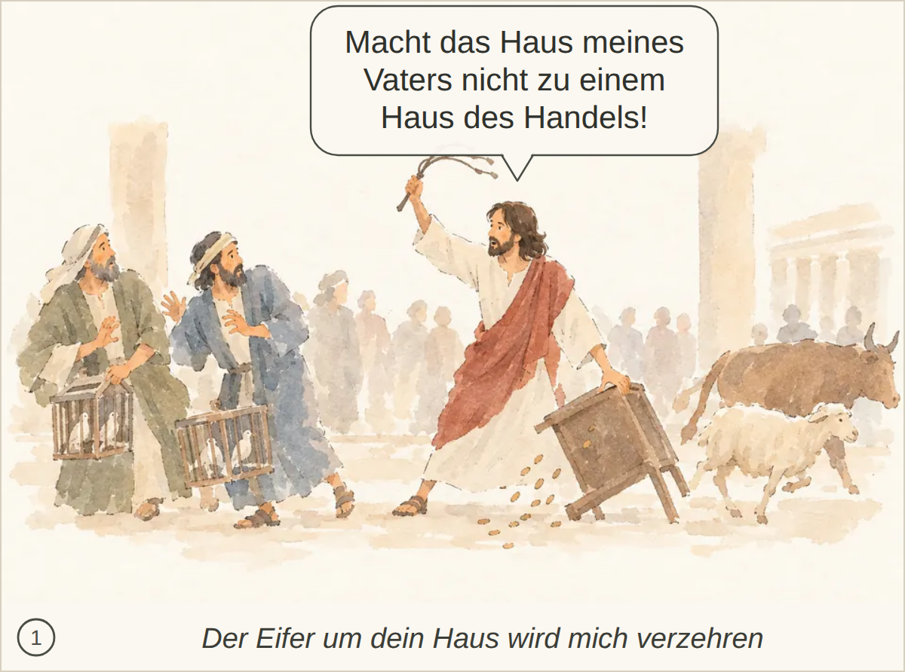

JHN-002-T1__r1v1.png ✔ gewählt: bestanden, 7 Punkte, Kern 2 Nichts Wesentliches; der Ausspruch Jesu wird nicht ausdrücklich erwähnt.
Blind: A bearded man in a white robe and red drape is advancing with raised cords while gripping or upsetting a wooden table. The two foreground men with bird cages recoil, and animals move away to the right as small objects spill onto the ground. – This appears to illustrate Jesus cleansing the Temple: the moment when he drives out sellers and animals, overturning tables and confronting merchants.

JHN-002-T1__r1v2.png: bestanden, 7 Punkte, Kern 2 Nur der Ausspruch Jesu wird nicht erwähnt.
Blind: A central bearded man raises a cord whip and overturns a table, spilling coins onto the ground. Two men on the left recoil in alarm beside cages of birds, while sheep and an ox move through the temple courtyard area. – This appears to illustrate Jesus cleansing the Temple, at the moment he drives out sellers and money changers, overturning a money table while animals and merchants scatter.

Kachel: bestanden, Kern 2 Nichts Wesentliches fehlt.